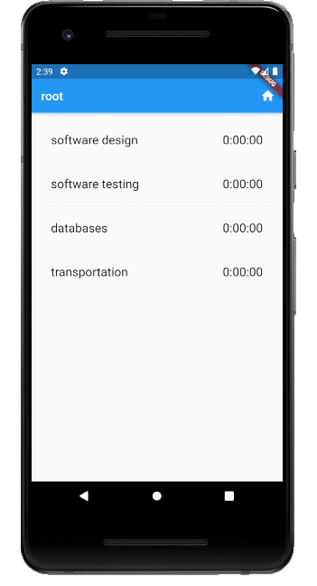
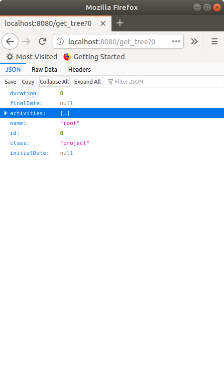
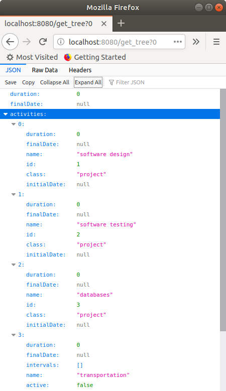

This tutorial has two goals:
- learn how to make a simple user interface in Flutter
- build the base of the time tracker app that you have to do for the practicum
A base means that some parts of the code you'll probably want to keep them, but others related to the user interface appearance, will definitely to be changed.
This is what we are going to build:

What this animation shows is :
- two types of screens, one for projects and tasks, another for intervals
- navigation down and up plus a go home button
- long press on a task item starts/stops its timer, creating a new interval
- periodic uptade of the interface every 6 seconds, that is, the app requests the webserver to update what it shows
- likewise, navigation up and down, go home, start and stop send requests also to the server
Preconditions:
- you have installed Flutter into IntelliJ. If not, see how to in the practicum handout
- you have read the slides on Dart and Fluttet
- same with the slides on Flutter "futures"
- optionally you have also gone through the getting started codelab in flutter.dev
First step is to create Dart classes to represent the one-level tree that is shown in both the task/projects screen or the intervals screen. In the first case the root is a project, in the second is a task. A Flutter object to display a screen of projects and tasks will get the data to show from this tree. For the moment we will instantiate a fixed fake tree. Later on, the tree will be the answer to a REST query to the webserver.
Create the data to show
1. Launch IntelliJ and create a new Flutter project named codelab_timetracker. Let the wizard create the lib/main.dart file for you.
2. Edit pubspec.yaml to add a dependency to the intl Dart library. It will allow us to format dates and times.
dependencies:
intl: ^0.16.1
flutter:
sdk: flutter
cupertino_icons: ^0.1.2
3. Add a new Dart file to the lib folder named tree.dart with the following content:
// see Serializing JSON inside model classes in
// https://flutter.dev/docs/development/data-and-backend/json
import 'package:intl/intl.dart';
import 'dart:convert' as convert;
final DateFormat _dateFormatter = DateFormat("yyyy-MM-dd HH:mm:ss");
abstract class Activity {
int id;
String name;
DateTime initialDate;
DateTime finalDate;
int duration;
List<dynamic> children = List<dynamic>();
Activity.fromJson(Map<String, dynamic> json)
: id = json['id'],
name = json['name'],
initialDate = json['initialDate']==null ? null : _dateFormatter.parse(json['initialDate']),
finalDate = json['finalDate']==null ? null : _dateFormatter.parse(json['finalDate']),
duration = json['duration'];
}
class Project extends Activity {
Project.fromJson(Map<String, dynamic> json) : super.fromJson(json) {
if (json.containsKey('activities')) {
// json has only 1 level because depth=1 or 0 in time_tracker
for (Map<String, dynamic> jsonChild in json['activities']) {
if (jsonChild['class'] == "project") {
children.add(Project.fromJson(jsonChild));
// condition on key avoids infinite recursion
} else if (jsonChild['class'] == "task") {
children.add(Task.fromJson(jsonChild));
} else {
assert(false);
}
}
}
}
}
class Task extends Activity {
bool active;
Task.fromJson(Map<String, dynamic> json) : super.fromJson(json) {
active = json['active'];
for (Map<String, dynamic> jsonChild in json['intervals']) {
children.add(Interval.fromJson(jsonChild));
}
}
}
class Interval {
int id;
DateTime initialDate;
DateTime finalDate;
int duration;
bool active;
Interval.fromJson(Map<String, dynamic> json)
: id = json['id'],
initialDate = json['initialDate']==null ? null : _dateFormatter.parse(json['initialDate']),
finalDate = json['finalDate']==null ? null : _dateFormatter.parse(json['finalDate']),
duration = json['duration'],
active = json['active'];
}
class Tree {
Activity root;
Tree(Map<String, dynamic> dec) {
// 1 level tree, root and children only, root is either Project or Task. If Project
// children are Project or Task, that is, Activity. If root is Task, children are Instance.
if (dec['class'] == "project") {
root = Project.fromJson(dec);
} else if (dec['class'] == "task") {
root = Task.fromJson(dec);
} else {
assert(false);
}
}
}
Tree getTree() {
String strJson = "{"
"\"name\":\"root\", \"class\":\"project\", \"id\":0, \"initialDate\":\"2020-09-22 16:04:56\", \"finalDate\":\"2020-09-22 16:05:22\", \"duration\":26,"
"\"activities\": [ "
"{ \"name\":\"software design\", \"class\":\"project\", \"id\":1, \"initialDate\":\"2020-09-22 16:05:04\", \"finalDate\":\"2020-09-22 16:05:16\", \"duration\":16 },"
"{ \"name\":\"software testing\", \"class\":\"project\", \"id\":2, \"initialDate\": null, \"finalDate\":null, \"duration\":0 },"
"{ \"name\":\"databases\", \"class\":\"project\", \"id\":3, \"finalDate\":null, \"initialDate\":null, \"duration\":0 },"
"{ \"name\":\"transportation\", \"class\":\"task\", \"id\":6, \"active\":false, \"initialDate\":\"2020-09-22 16:04:56\", \"finalDate\":\"2020-09-22 16:05:22\", \"duration\":10, \"intervals\":[] }"
"] "
"}";
Map<String, dynamic> decoded = convert.jsonDecode(strJson);
Tree tree = Tree(decoded);
return tree;
}
testLoadTree() {
Tree tree = getTree();
print("root name ${tree.root.name}, duration ${tree.root.duration}");
for (Activity act in tree.root.children) {
print("child name ${act.name}, duration ${act.duration}");
}
}
void main() {
testLoadTree();
}
4. Read the code, it's simple: two classes Project and Task inherit from Activity so that we have this as their common type. They contain a named constructor fromJson that takes a dictionary (in Dart, a Map<String, dynamic> whose keys are the JSON fields and dynamic means any type) and sets the attributes. If a date-time is not null then we parse the string to obtain a DateTime value, a type defined in the intl library.
In function getTree() we instantiate a sample JSON string and decode it producing a JSON object by means of the convert library. This object is the parameter of the Tree constructor that is just a wrapper of the root of the 1-level tree, either a project or a task object.
5. To run this test, Run ⟶ Run... ⟶ Edit configurations... ⟶ + and add a new configuration to the Flutter group with name "test tree" and search file tree.dart for Dart entrypoint.
Create the view to show the data
1. Open file main.dart and replace its content by this
import 'package:flutter/material.dart';
void main() => runApp(MyApp());
class MyApp extends StatelessWidget {
// This widget is the root of your application.
@override
Widget build(BuildContext context) {
return MaterialApp(
title: 'TimeTracker',
theme: ThemeData(
primarySwatch: Colors.blue,
textTheme: TextTheme(
subhead: TextStyle(fontSize:20.0),
body1:TextStyle(fontSize:20.0)),
),
home: Scaffold(
appBar: AppBar(
title: Text('TimeTracker'),
),
body: Center(
child: Text('Hello'),
),
),
);
}
}
To run this non-interesting main change the run configuration to the default one.
Now we are going to make the screen that shows the projects and tasks of a Tree object that contains a one-level tree (root plus children only, being the root a project).
2. Create a new Dart file in lib folder named page_activities.dart. The file is empty.
3. Edit this file and write stful and upon pressing Return this code will appear
class extends StatefulWidget {
@override
_State createState() => _State();
}
class _State extends State<> {
@override
Widget build(BuildContext context) {
return Container();
}
}
4. This is a template we have to complete by specifying some class names:
class PageActivities extends StatefulWidget {
@override
_PageActivitiesState createState() => _PageActivitiesState();
}
class _PageActivitiesState extends State<PageActivities> {
@override
Widget build(BuildContext context) {
return Container();
}
}
5. There are some errors because we still have to import a library defining the classes Widget, State etc. Add it:
import 'package:flutter/material.dart';
6. Class PageActivitiesState is in charge of getting the data to show, which is the state. When the state changes the page will automatically be redrawn with the new data. For now let's just get the Tree object from the getTree() whe have created in tree.dart :
import 'package:codelab_timetracker/tree.dart';
import 'package:flutter/material.dart';
class PageActivities extends StatefulWidget {
@override
_PageActivitiesState createState() => _PageActivitiesState();
}
class _PageActivitiesState extends State<PageActivities> {
Tree tree;
@override
void initState() {
super.initState();
tree = getTree();
}
@override
Widget build(BuildContext context) {
return Container();
}
}
7. Now we are going to edit the build() method so that it draws a list view whose items are the childs of the tree. Relace the build method by this:
@override
Widget build(BuildContext context) {
return Scaffold(
appBar: AppBar(
title: Text(tree.root.name),
actions: <Widget>[
IconButton(icon: Icon(Icons.home),
onPressed: () {}
// TODO go home page = root
),
//TODO other actions
],
),
body: ListView.separated(
// it's like ListView.builder() but better
// because it includes a separator between items
padding: const EdgeInsets.all(16.0),
itemCount: tree.root.children.length,
itemBuilder: (BuildContext context, int index) =>
_buildRow(tree.root.children[index], index),
separatorBuilder: (BuildContext context, int index) =>
const Divider(),
),
);
}
8. Note that the named constructor of Listview has a parameter itemBuilder that expects a function returning the widget to show as a certain position (index) of the list. This function is _buildRow():
Widget _buildRow(Activity activity, int index) {
String strDuration = Duration(seconds: activity.duration).toString().split('.').first;
// split by '.' and taking first element of resulting list
// removes the microseconds part
if (activity is Project) {
return ListTile(
title: Text('${activity.name}'),
trailing: Text('$strDuration'),
onTap: () => {},
// TODO, navigate down to show children tasks and projects
);
} else if (activity is Task) {
Task task = activity as Task;
Widget trailing;
trailing = Text('$strDuration');
return ListTile(
title: Text('${activity.name}'),
trailing: trailing,
onTap: () => {},
// TODO, navigate down to show intervals
onLongPress: () {},
// TODO start/stop counting the time for tis task
);
}
}
9. Finally in main.dart replace home: Scaffold(...) object by:
home: PageActivities()
10. Now run again with hot reload  and this is what we get:
and this is what we get:

We are going to make another screen to show the intervals of a task. This is necessary because the data to show for intervals is different from that of projects and tasks. In a second step we'll link task transportation to this new screen. That is, when you tap on transportation you'll see its intervals.
1. We'll begin by creating the data to show. Go to tree.dart and add this function:
Tree getTreeTask() {
String strJson = "{"
"\"name\":\"transportation\",\"class\":\"task\", \"initialDate\":\"2020-09-22 13:36:08\", \"finalDate\":\"2020-09-22 13:36:34\", \"duration\":10,"
"\"intervals\":["
"{\"class\":\"interval\", \"initialDate\":\"2020-09-22 13:36:08\", \"finalDate\":\"2020-09-22 13:36:14\", \"duration\":6 },"
"{\"class\":\"interval\", \"initialDate\":\"2020-09-22 13:36:30\", \"finalDate\":\"2020-09-22 13:36:34\", \"duration\":4}"
"]}";
Map<String, dynamic> decoded = convert.jsonDecode(strJson);
Tree tree = Tree(decoded);
return tree;
}
2. Add a new file PageIntervals.dart to the lib folder and like before write stful to get the template and insert the proper class names:
import 'package:flutter/material.dart';
class PageIntervals extends StatefulWidget {
@override
_PageIntervalsState createState() => _PageIntervalsState();
}
class _PageIntervalsState extends State<PageIntervals> {
@override
Widget build(BuildContext context) {
return Container();
}
}
3. Add to class _PageIntervalsState the methods initState(), build() and _buildRow() analogous to those of PageActivities.
We need class Interval from tree.dart but this class already exists in another Dart library so we have to disambiguate with a prefix:
import 'package:codelab_timetracker/tree.dart' as Tree;
// to avoid collision with an Interval class in another library
Tree.Tree tree;
@override
void initState() {
super.initState();
tree = Tree.getTreeTask();
// the root is a task and the children its intervals
}
@override
Widget build(BuildContext context) {
return Scaffold(
appBar: AppBar(
title: Text(tree.root.name),
actions: <Widget>[
IconButton(icon: Icon(Icons.home),
onPressed: () {} // TODO go home page = root
),
//TODO other actions
],
),
body: ListView.separated(
// it's like ListView.builder() but better because it includes a
// separator between items
padding: const EdgeInsets.all(16.0),
itemCount: tree.root.children.length, // number of intervals
itemBuilder: (BuildContext context, int index) =>
_buildRow(tree.root.children[index], index),
separatorBuilder: (BuildContext context, int index) =>
const Divider(),
),
);
}
Widget _buildRow(Tree.Interval interval, int index) {
String strDuration = Duration(seconds: interval.duration).toString().split('.').first;
String strInitialDate = interval.initialDate.toString().split('.')[0];
// this removes the microseconds part
String strFinalDate = interval.finalDate.toString().split('.')[0];
return ListTile(
title: Text('from ${strInitialDate} to ${strFinalDate}'),
trailing: Text('$strDuration'),
);
}
4. Just to check it works, in main.dart change the home attribute and reload the app. Once done undo the change.
home: PageIntervals() //PageActivities()
5. To connect the two pages go to page_activities.dart and provide a method to the onTap parameter of ListTile in _PageActivitiesState._buildRow():
} else if (activity is Task) {
Task task = activity as Task;
Widget trailing;
trailing = Text('$strDuration');
return ListTile(
title: Text('${activity.name}'),
trailing: trailing,
onTap: () => _navigateDownIntervals(index),
onLongPress: () {}, // TODO start/stop counting the time for tis task
);
}
void _navigateDownIntervals(int childId) {
Navigator.of(context)
.push(MaterialPageRoute<void>(builder: (context) => PageIntervals())
);
}
6. Reload and check that when you tap on task transportation the view changes to show its intervals. Also, the up button  in this latter view goes back to the first view even though we have not programmed it. However the home button does nothing yet, it's up to us to define its behaviour.
in this latter view goes back to the first view even though we have not programmed it. However the home button does nothing yet, it's up to us to define its behaviour.
Until now we have been working with fake, fixed data of projects, tasks and intervals. Now we are going to get real data from the Java webserver through its REST API, that is, by http requests.
We'll want our webserver to listen to port 8080 and answer to the following requests:
http://10.0.2.2:8080/get_tree?nreturns the one-level tree that has as root a certain task or project (thus, an activity) with id equal ton, an integer number. The tree is represented as a JSON string, like those returned bygetTree()andgetTreeTask()methods intree.dart.http://10.0.2.2:8080/start?nandhttp://10.0.2.2:8080/stop?ndo not return any value but start or stop counting time of a task with id equal ton
Open your Java time tracker project and follow these steps:
1. Each time a new task, project or interval is instantiated, its constructor gets and stores in an attribute int id a unique id number. Hence, there must be some class in charge of the responsibility to provide unique ids.
2. Add the capabilitiy of looking for a project or task with a certain id number. For instance add a recursive method findActivityById(int n) to the Project class.
3. Make a new package named webserver and add to it the following two files:
MainWebServer.java
package webserver;
import core.Activity;
import core.Clock;
public class MainWebServer {
public static void main(String[] args) {
webServer();
}
public static void webServer() {
final Activity root = makeTreeCourses();
// implement this method that returns the tree of
// appendix A in the practicum handout
// start your clock
new WebServer(root);
}
}
WebServer.java
package webserver;
import core.Activity;
import core.Task;
import java.io.BufferedReader;
import java.io.IOException;
import java.io.InputStreamReader;
import java.io.PrintWriter;
import java.net.ServerSocket;
import java.net.Socket;
import java.util.StringTokenizer;
// Based on
// https://www.ssaurel.com/blog/create-a-simple-http-web-server-in-java
// http://www.jcgonzalez.com/java-socket-mini-server-http-example
public class WebServer {
private static final int PORT = 8080; // port to listen to
private Activity currentActivity;
private final Activity root;
public WebServer(Activity root) {
this.root = root;
System.out.println(root);
currentActivity = root;
try {
ServerSocket serverConnect = new ServerSocket(PORT);
System.out.println("Server started.\nListening for connections on port : " + PORT + " ...\n");
// we listen until user halts server execution
while (true) {
// each client connection will be managed in a dedicated Thread
new SocketThread(serverConnect.accept());
// create dedicated thread to manage the client connection
}
} catch (IOException e) {
System.err.println("Server Connection error : " + e.getMessage());
}
}
private Activity findActivityById(int id) {
return root.findActivityById(id);
}
private class SocketThread extends Thread {
// SocketThread sees WebServer attributes
private final Socket insocked;
// Client Connection via Socket Class
SocketThread(Socket insocket) {
this.insocked = insocket;
this.start();
}
@Override
public void run() {
// we manage our particular client connection
BufferedReader in;
PrintWriter out;
String resource;
try {
// we read characters from the client via input stream on the socket
in = new BufferedReader(new InputStreamReader(insocked.getInputStream()));
// we get character output stream to client
out = new PrintWriter(insocked.getOutputStream());
// get first line of the request from the client
String input = in.readLine();
// we parse the request with a string tokenizer
System.out.println("sockedthread : " + input);
StringTokenizer parse = new StringTokenizer(input);
String method = parse.nextToken().toUpperCase();
// we get the HTTP method of the client
if (!method.equals("GET")) {
System.out.println("501 Not Implemented : " + method + " method.");
} else {
// what comes after "localhost:8080"
resource = parse.nextToken();
System.out.println("input " + input);
System.out.println("method " + method);
System.out.println("resource " + resource);
parse = new StringTokenizer(resource, "/[?]=&");
int i = 0;
String[] tokens = new String[20];
// more than the actual number of parameters
while (parse.hasMoreTokens()) {
tokens[i] = parse.nextToken();
System.out.println("token " + i + "=" + tokens[i]);
i++;
}
// Make the answer as a JSON string, to be sent to the Javascript client
String answer = makeHeaderAnswer() + makeBodyAnswer(tokens);
System.out.println("answer\n" + answer);
// Here we send the response to the client
out.println(answer);
out.flush(); // flush character output stream buffer
}
in.close();
out.close();
insocked.close(); // we close socket connection
} catch (Exception e) {
System.err.println("Exception : " + e);
}
}
private String makeBodyAnswer(String[] tokens) {
String body = "";
switch (tokens[0]) {
case "get_tree" : {
int id = Integer.parseInt(tokens[1]);
Activity activity = findActivityById(id);
assert (activity!=null);
body = activity.toJson(1).toString();
break;
}
case "start": {
int id = Integer.parseInt(tokens[1]);
Activity activity = findActivityById(id);
assert (activity!=null);
Task task = (Task) activity;
task.start();
body = "{}";
break;
}
case "stop": {
int id = Integer.parseInt(tokens[1]);
Activity activity = findActivityById(id);
assert (activity!=null);
Task task = (Task) activity;
task.stop();
body = "{}";
break;
}
// TODO: add new task, project
// TODO: edit task, project properties
default:
assert false;
}
System.out.println(body);
return body;
}
private String makeHeaderAnswer() {
String answer = "";
answer += "HTTP/1.0 200 OK\r\n";
answer += "Content-type: application/json\r\n";
answer += "\r\n";
// blank line between headers and content, very important !
return answer;
}
} // SocketThread
} // WebServer
Note an important detail in this line in method makeBodyAnswer():
body = activity.toJson(1).toString();
The 1 means the desired depth of the tree, root plus its children and no more descendants. Each recursive call to toJson decrements the passed depth value, when received depth is zero do nothing.
4. To check everything works, open a web browser and go to URL http://localhost:8080/get_tree?0, you should see this:
 |  |
5. You can also try to start and stop the task. Finding the id of the task named transportation (suppose it's 6) and then go to http://localhost:8080/start?6, wait some seconds, go to http://localhost:8080/stop?6 and http://localhost:8080/get_tree?6 to check an interval has been created and duration is some seconds.
Now switch to the Flutter project. We have to add code to send http requests to the server and get the corresponding answer. This answer is only needed for the get_tree request because it contains what we have to show next in the interface.
Read this part of the Flutter documentation to understand the code below.
1. Make a new file requests.dart with the following content:
import 'dart:convert' as convert;
import 'package:http/http.dart' as http;
import 'tree.dart';
final http.Client client = http.Client();
// better than http.get() if multiple requests to the same server
// If you connect the Android emulator to the webserver listening to localhost:8080
const String baseUrl = "http://10.0.2.2:8080";
// If instead you want to use a real phone, run this command in the linux terminal
// ssh -R joans.serveousercontent.com:80:localhost:8080 serveo.net
//const String baseUrl = "https://joans.serveousercontent.com";
Future<Tree> getTree(int id) async {
String uri = "$baseUrl/get_tree?$id";
final response = await client.get(uri);
// response is NOT a Future because of await but since getTree() is async,
// execution continues (leaves this function) until response is available,
// and then we come back here
if (response.statusCode == 200) {
print("statusCode=$response.statusCode");
print(response.body);
// If the server did return a 200 OK response, then parse the JSON.
Map<String, dynamic> decoded = convert.jsonDecode(response.body);
return Tree(decoded);
} else {
// If the server did not return a 200 OK response, then throw an exception.
print("statusCode=$response.statusCode");
throw Exception('Failed to get children');
}
}
Future<void> start(int id) async {
String uri = "$baseUrl/start?$id";
final response = await client.get(uri);
if (response.statusCode == 200) {
print("statusCode=$response.statusCode");
} else {
print("statusCode=$response.statusCode");
throw Exception('Failed to get children');
}
}
Future<void> stop(int id) async {
String uri = "$baseUrl/stop?$id";
final response = await client.get(uri);
if (response.statusCode == 200) {
print("statusCode=$response.statusCode");
} else {
print("statusCode=$response.statusCode");
throw Exception('Failed to get children');
}
}
2. Open pubspec.yaml and add the http library dependence
dependencies:
http: ^0.12.0+4
intl: ^0.16.1
flutter:
sdk: flutter
go back to requests.dart and click on Get dependencies.
3. Add attribute id to PageActivities
class PageActivities extends StatefulWidget {
int id;
PageActivities(this.id);
4. Update main.dart adding parameter 0 to the constructor which means that we are going to start the applicacion showing children's root because by convention (you have to enforce it in your Java timetracker project) the root has id 0.
home: PageActivities(0)
5. Update class _PageActivitiesState to obtain the id from PageActivities and from it the one-level tree through an http request. Since we don't konw when the response will be available we have to introduce futures.
import 'package:codelab_timetracker/tree.dart' hide getTree;
// the old getTree()
import 'package:codelab_timetracker/requests.dart';
// has the new getTree() that sends an http request to the server
class _PageActivitiesState extends State<PageActivities> {
int id;
Future<Tree> futureTree;
@override
void initState() {
super.initState();
id = widget.id; // of PageActivities
futureTree = getTree(id);
}
6. Update build() and _buildRow() to user futures. See how to use futures with a listview in this post
// future with listview
// https://medium.com/nonstopio/flutter-future-builder-with-list-view-builder-d7212314e8c9
@override
Widget build(BuildContext context) {
return FutureBuilder<Tree>(
future: futureTree,
// this makes the tree of children, when available, go into snapshot.data
builder: (context, snapshot) {
// anonymous function
if (snapshot.hasData) {
return Scaffold(
appBar: AppBar(
title: Text(snapshot.data.root.name),
actions: <Widget>[
IconButton(icon: Icon(Icons.home),
onPressed: () {} // TODO go home page = root
),
//TODO other actions
],
),
body: ListView.separated(
// it's like ListView.builder() but better because it includes a separator between items
padding: const EdgeInsets.all(16.0),
itemCount: snapshot.data.root.children.length,
itemBuilder: (BuildContext context, int index) =>
_buildRow(snapshot.data.root.children[index], index),
separatorBuilder: (BuildContext context, int index) =>
const Divider(),
),
);
} else if (snapshot.hasError) {
return Text("${snapshot.error}");
}
// By default, show a progress indicator
return Container(
height: MediaQuery.of(context).size.height,
color: Colors.white,
child: Center(
child: CircularProgressIndicator(),
));
},
);
}
Widget _buildRow(Activity activity, int index) {
String strDuration = Duration(seconds: activity.duration).toString().split('.').first;
// split by '.' and taking first element of resulting list removes the microseconds part
if (activity is Project) {
return ListTile(
title: Text('${activity.name}'),
trailing: Text('$strDuration'),
onTap: () => _navigateDownActivities(activity.id),
);
} else if (activity is Task) {
Task task = activity as Task;
// at the moment is the same, maybe changes in the future
Widget trailing;
trailing = Text('$strDuration');
return ListTile(
title: Text('${activity.name}'),
trailing: trailing,
onTap: () => _navigateDownIntervals(activity.id),
onLongPress: () {}, // TODO start/stop counting the time for tis task
);
}
}
7. Update _navigateDownIntervals() and add _navigateDownActivities() so that we pass the position of the element on which we have tapped to the constructor of PageActivities and PageIntervals. Then, in the initState they send the http request to get the children of this element, either projects and tasks or intervals.
void _navigateDownActivities(int childId) {
Navigator.of(context)
.push(MaterialPageRoute<void>(
builder: (context) => PageActivities(childId),
));
}
void _navigateDownIntervals(int childId) {
Navigator.of(context)
.push(MaterialPageRoute<void>(
builder: (context) => PageIntervals(childId),
));
}
8. There is still a problem because we need to update PageIntervals like we have done with PageActivities, first introduce id and futures, then update build() (but not _buildRow()):
import 'package:codelab_timetracker/tree.dart' as Tree hide getTree;
// to avoid collision with an Interval class in another library
import 'package:codelab_timetracker/requests.dart';
class PageIntervals extends StatefulWidget {
int id;
PageIntervals(this.id);
class _PageIntervalsState extends State<PageIntervals> {
int id;
Future<Tree.Tree> futureTree;
@override
void initState() {
super.initState();
id = widget.id;
futureTree = getTree(id);
}
@override
Widget build(BuildContext context) {
return FutureBuilder<Tree.Tree>(
future: futureTree,
// this makes the tree of children, when available, go into snapshot.data
builder: (context, snapshot) {
// anonymous function
if (snapshot.hasData) {
int numChildren = snapshot.data.root.children.length;
return Scaffold(
appBar: AppBar(
title: Text(snapshot.data.root.name),
actions: <Widget>[
IconButton(icon: Icon(Icons.home),
onPressed: () {}, // TODO
)
],
),
body: ListView.separated(
// it's like ListView.builder() but better because it includes a separator between items
padding: const EdgeInsets.all(16.0),
itemCount: numChildren,
itemBuilder: (BuildContext context, int index) =>
_buildRow(snapshot.data.root.children[index], index),
separatorBuilder: (BuildContext context, int index) =>
const Divider(),
),
);
} else if (snapshot.hasError) {
return Text("${snapshot.error}");
}
// By default, show a progress indicator
return Container(
height: MediaQuery.of(context).size.height,
color: Colors.white,
child: Center(
child: CircularProgressIndicator(),
));
},
);
}
In method build() of PageActivities.dartandPageIntervals.dart do
IconButton(icon: Icon(Icons.home),
onPressed: () {
while(Navigator.of(context).canPop()) {
print("pop");
Navigator.of(context).pop();
}
/* this works also:
Navigator.popUntil(context, ModalRoute.withName('/'));
*/
PageActivities(0);
}),
Now the navigation throughout the tree of projects, tasks and intervals is complete. However, we can't yet start/stop a task. We have to ask for it by providing a function to the onLongPress parameter of ListView constructor in PageActivities._buildRow():
onLongPress: () {
if ((activity as Task).active) {
stop(activity.id);
} else {
start(activity.id);
}
},
Once a task is started, when we navigate to its content we see a new interval. If we go up and down again, we can see the duration and final dates are updated. But there are several problems:
- the duration of the task shown in the home screen does not change, as we would like to see
- only when we ‘go down' we see the duration up to date, and not when we ‘go up'
- likewise, duration and final date of the new interval changes only when we enter into this screen (‘go down')
- duration (and final date in the case of the intervals screen) does not change when a task is active or a project has an active task among its descendants
The problem is that we are not updating the state of the screen showing the task, and we only update the state of the intervals screen when we go down because this is implicit. We have to tell Flutter the state has changed so it can redraw the screen.
Read this post for an in depth explanation.
In page_activities.dart, do these changes:
void _refresh() async {
futureTree = getTree(id); // to be used in build()
setState(() {});
}
The assignment of futureTree should go in the setState body but Flutter documentation recommends to put futures and asyncs inside it, this is why the body is empty.
onLongPress: () {
if ((activity as Task).active) {
stop(activity.id);
_refresh(); // to show immediately that task has started
} else {
start(activity.id);
_refresh(); // to show immediately that task has stopped
}
},
void _navigateDownActivities(int childId) {
// we can not do just _refresh() because then the up arrow doesnt appear in the appbar
Navigator.of(context)
.push(MaterialPageRoute<void>(
builder: (context) => PageActivities(childId),
)).then( (var value) {
_refresh();
});
}
void _navigateDownIntervals(int childId) {
Navigator.of(context)
.push(MaterialPageRoute<void>(
builder: (context) => PageIntervals(childId),
)).then( (var value) {
_refresh();
});
//https://stackoverflow.com/questions/49830553/how-to-go-back-and-refresh-the-previous-page-in-flutter?noredirect=1&lq=1
}
With this we solve problems 1-3 but no yet 4, that is, showing the data of active tasks, projects and intervals all the time, not just when we go up and down. We need some mechanism to periodically update the screen. We'll address this in the next section.
The solution to the periodic refresh of a screen is copied from this post.
We'll update the state of the screen periodically by first adding a Timer attribute to _PageActivitiesState and then _PageIntervalsState. For the moment we'll work on the first class.
1. Add a Timer attribute and periode refresh like in the code below. You'll need to import the async library. More on the Timer class in the Flutter reference documentation and usage examples in this post.
import 'dart:async';
class _PageActivitiesState extends State<PageActivities> {
int id;
Future<Tree> futureTree;
Timer _timer;
static const int periodeRefresh = 6;
// better a multiple of periode in TimeTracker, 2 seconds
2. Add method _activateTimer() that initializes it and specifies what to do every periode. The opposite action, deactivate the timer, is simply _timer.cancel().
void _activateTimer() {
_timer = Timer.periodic(Duration(seconds: periodeRefresh), (Timer t) {
futureTree = getTree(id);
setState(() {});
});
}
3. Now write the sentences to activate and deactivate the timer. Activation must happen each time we show the screen, the very first time it shows and subsequent times when we ‘go down' from its parent and show it. Also, each time we ‘go down', to either another projects/tasks screen or an intervals screen and then ‘go up'.
We have to stop the timer when we ‘go down' and ‘go up'. Just in case, we do it also at the dispose method.
@override
void initState() {
super.initState();
id = widget.id;
futureTree = getTree(id);
_activateTimer();
}
void _navigateDownActivities(int childId) {
_timer.cancel();
// we can not do just _refresh() because then the up arrow doesnt appear in the appbar
Navigator.of(context)
.push(MaterialPageRoute<void>(
builder: (context) => PageActivities(childId),
)).then( (var value) {
_activateTimer();
_refresh();
});
//https://stackoverflow.com/questions/49830553/how-to-go-back-and-refresh-the-previous-page-in-flutter?noredirect=1&lq=1
}
void _navigateDownIntervals(int childId) {
_timer.cancel();
Navigator.of(context)
.push(MaterialPageRoute<void>(
builder: (context) => PageIntervals(childId),
)).then( (var value) {
_activateTimer();
_refresh();
});
}
Note that both _activateTimer() and _refresh() get the updated one-level tree to show and change the state to provoke redrawing the screen, so it seems we could get rid of _refresh. But then the problem is that when we start a task are not going to see changes until after 6 seconds later (at most). Since we want the interface to be responsive, we keep it.
@override
void dispose() {
// "The framework calls this method when this State object will never build again"
// therefore when going up
_timer.cancel();
super.dispose();
}
5. Run the application doing a hot reload and you'll see that when you start a task, its duration and that of the antecessor projects us updated automatically every 6 seconds. But not the intervals screen. To do so, in class _PageIntervalsState do the same as in _PageActivitiesState:
- add the attributes
_timerandperiodeRefresh(set to 6 seconds) - add sentence
_activateTimer();to methodinitState() - copy the methods
_activateTimer()anddispose()(later we should somehow avoid this redundacy)
6. Run again the application and check that also the duration and final date of the active interval changes periodically.
We leave two details for you to implement:
- Dates and duration are formated with the same expressions in several places. Make utility functions
formatDuration()andformatDate()to avoid redundancy and allow modifying the output format with a single change in the code. This can be useful for localization of the app. - There is no cue to show what is active at each moment (task, last interval of an active task, project with an active task as decendant). Add it to the interface. For instance show a clock icon and/or change the color of the text.